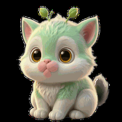
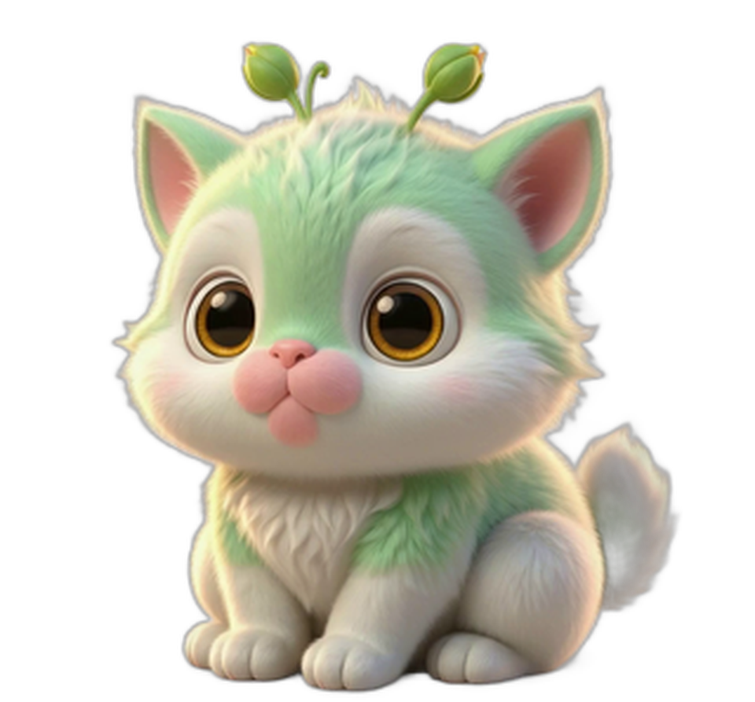
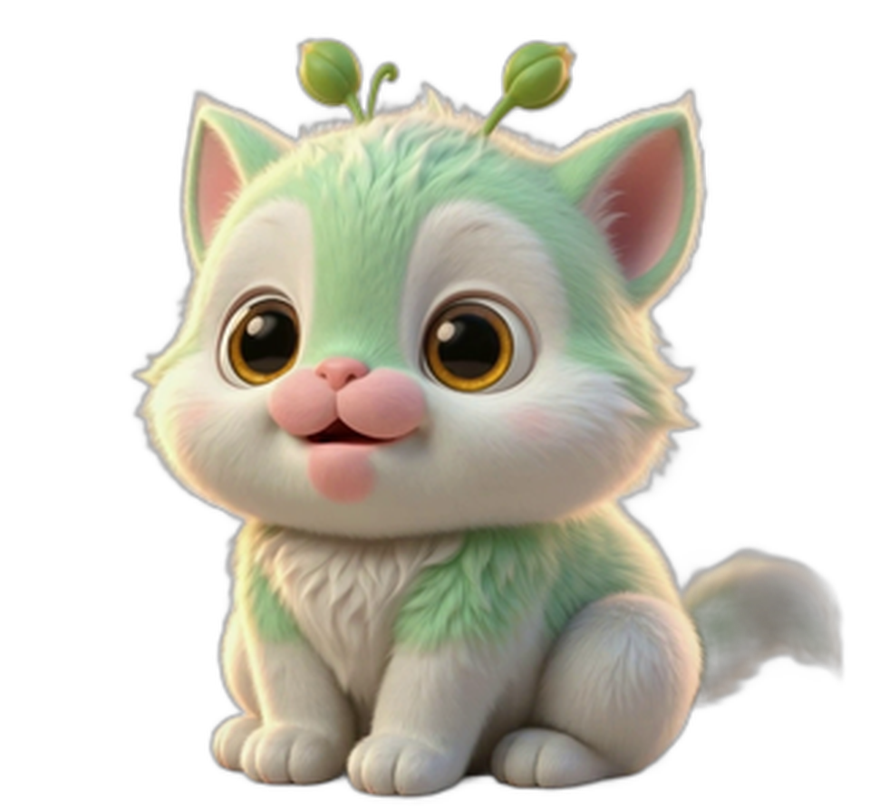
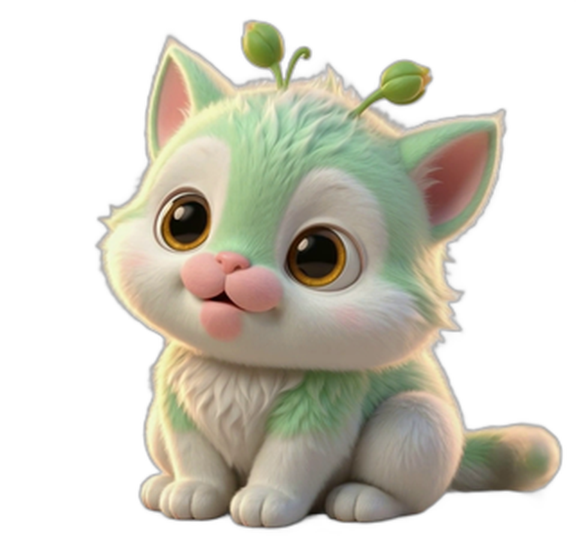
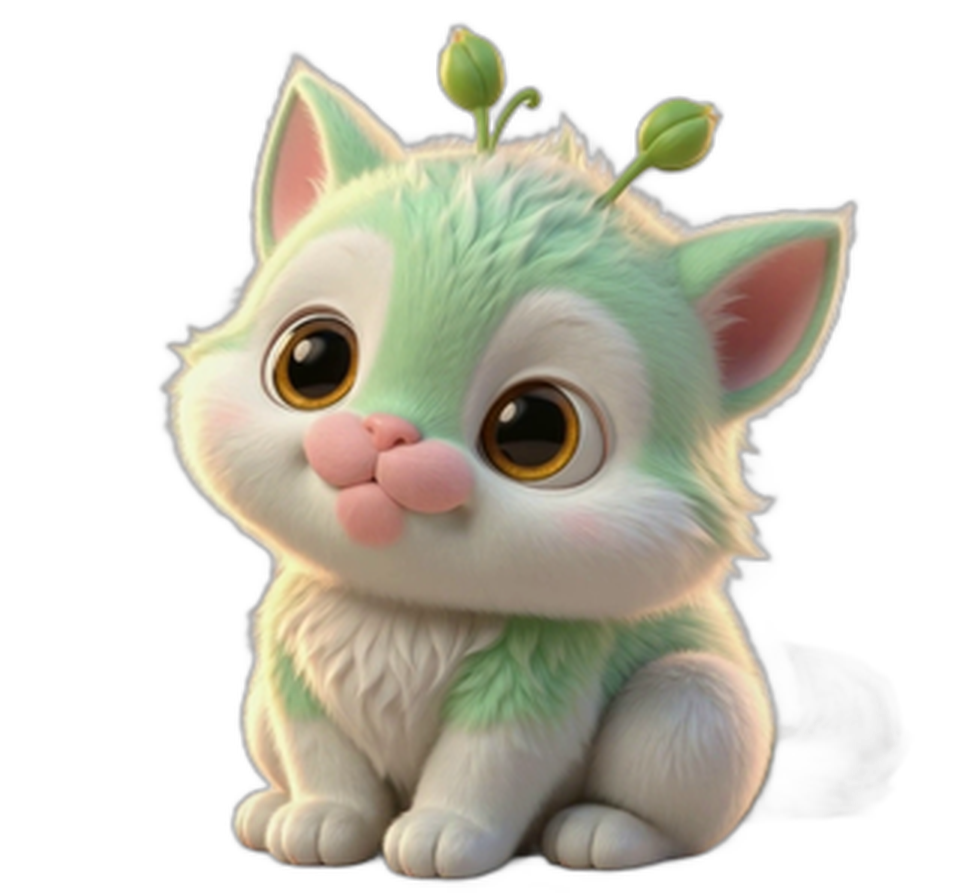

🌱 青芽 v5 Demo · 蹲坐版
根据你的反馈改了三件事：① 蹲坐而不站着 ② 无蝴蝶结等拟人装饰 ③ 头更大身体更圆润。同时换了
rembg (u2netp AI 抠图)
，比之前的 GrabCut 在浅色背景图上效果更好。
早呀
😪

hi🌱
v5 rembg 抠图版
· 251KB · 14 帧透明 · 240×240
蹲坐版 · 大头
可爱
在微信聊天背景实际效果
微信背景 #ededed
实际嵌入颜色
纯白
深绿
棋盘格
检验透明度
4 帧分解 · 看动作幅度

帧 0
· 起始坐姿

帧 4
· 抬头

帧 8
· 转耳

帧 12
· 眨眼前
对比：v3 站姿 vs v5 蹲坐
v3 站姿版
（旧）
v5 蹲坐版
（新）
v5 产出文件（videos_v5/）：
·
demo_zaoan_v5_rembg.gif
← 最终版，251KB
· rembg_00..13.png — 14 帧透明 PNG
· v5_rembg_4frames.png — 4 帧拼图预览
· qy_test_v5.png — 源图（蹲坐版）
· 视频：A_cute_round_fluffy_fantasy_pl_2026-09-05T12-47-42.mp4